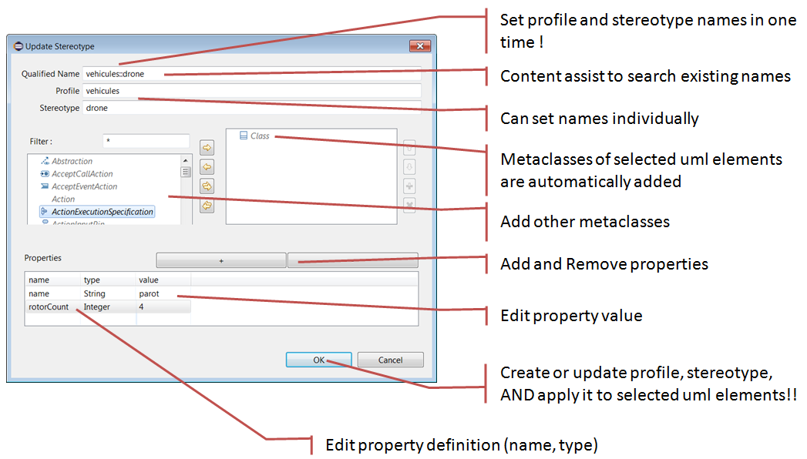

Contents
Papyrus provides a simplified way to create, apply and modify Profiles and Stereotypes. We call it 'simplified' comparatively to the way where one should first define Profile and Stereotypes, then apply the Profile, and finally apply and modify the Stereotype.
The simplified usage propose one single Dialog used to create a Profile and a Stereotype, then apply both to the selected element, and all in no more than two clicks ! Also, the same Dialog can be used to update the Stereotype definition, or the application values.
Select the UML element to apply the profile, right click -> Profile -> Update Profile ...
The following Dialog appears:

In Qualified Name, type the Profile name and the Stereotype name separated by '::'.
The metaclass should already be selected, based on the metaclass of the currently selected UML element. You can add metaclasses if you whish.
In Properties, add properties to your profile: click '+', then set the name, select a type, and set a value.
Clicking 'OK' will do the following:
Select the UML element applying the profile to update, right click -> Profile -> Update Profile ...
In Qualified Name, type the beginning of the name of the Stereotype to update. The Content Assist should propose Stereotypes matching your input. Select your Stereotype.
The Dialog should show the actual values of the Stereotype. You can change the Properties and their values.
If you change the name of the Stereotype or the Profile, this will create a new Stereotype.